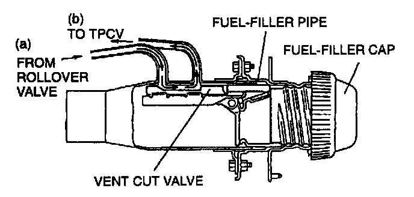
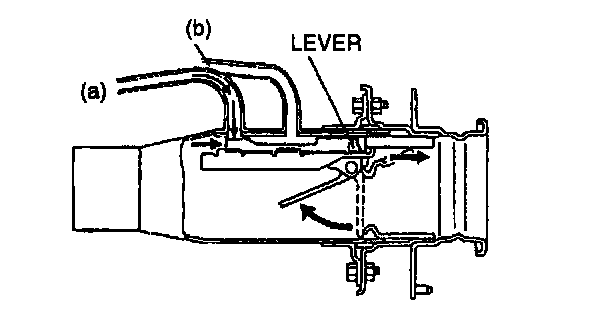
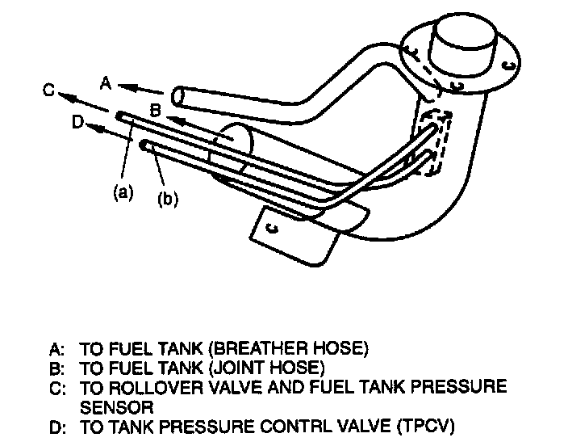

Fuel Tank Cut Valve: Testing and Inspection
CAUTION: It is necessary to install the fuel-filler cap properly. When the fuel-filler cap, except for the OES, has been installed or the fuel-filler cap is loose, the vent cut valve may not operate properly.
1. Verify that air goes through from (a) to (b) with the fuel-filler cap on.
2. If air does not go through, replace the fuel-filler pipe component.
3. Remove the fuel-filler cap.


4. While depressing the lever in the fuel-filler port, verify that air does not go through from (a) to (b).
5. If air goes through them, replace the fuel-filler pipe component.